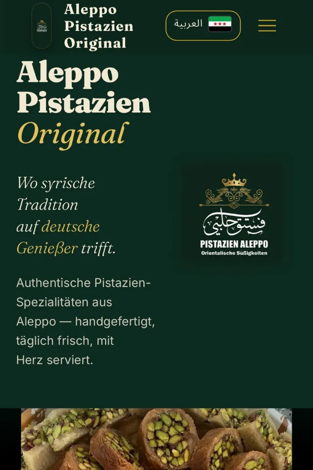

Aleppo Pistazien — Bilingual Café Website
Client Project (Live) View Live Project →
Problem
A Syrian confectionery in Augsburg serving two language communities — German and Arabic — with no web presence of its own. The same questions arrived daily: hours, assortment, catering, halal.
Action
Benchmarked local café sites, wrote a structured client brief, then built a fully bilingual DE/AR site — every element mirrored, RTL included — as a static site on Cloudflare Pages with Decap CMS integrated, so the shop manager adds and updates the assortment themselves — content lives in the repo, no database to run. Ordering deliberately runs through WhatsApp instead of a webshop, because that's where the customers already are. Legal pages, allergen disclosure, and a click-to-load map keep it DSGVO-clean.
Result
Live at aleppo-pistazien.de: assortment, gallery, custom cakes, structured catering requests, FAQ — and the café's 4.8-star Google reputation, findable in both of its customers' languages. Built solo, AI-assisted, from brief to deployment.